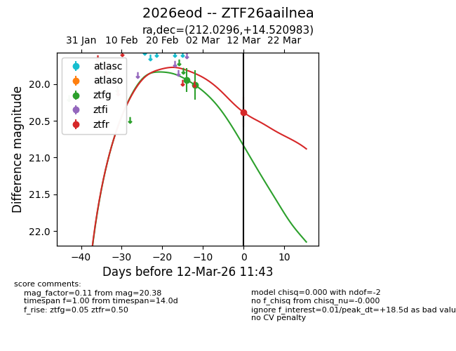
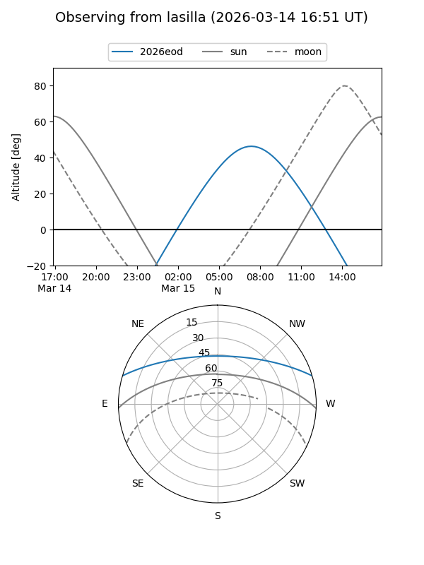
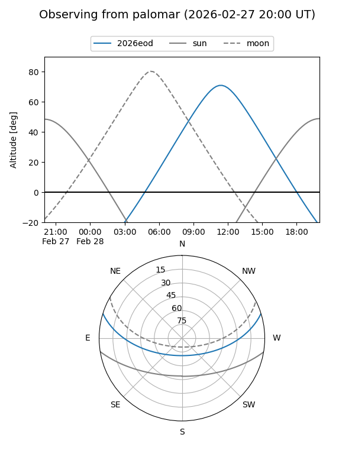
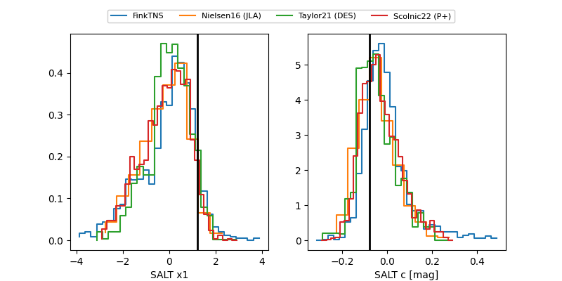

2026eod
Target 2026eod at 2026-03-12 11:44
Aliases and brokers:
FINK: link
Lasair: link
ALeRCE: link
TNS: link
YSE: link
alt names
ZTF26aailnea (ztf,fink_ztf)
2026eod (tns,yse)
Coordinates:
equatorial (ra, dec) = 212.0296,+14.52098
equatorial (HMS+DMS) = 14:08:07.11,+14:31:15.54
galactic (l, b) = (1.5646,+68.14264)
Flags:
Photometry:
last ztfg=20.01, ztfr=20.38
2 ztfg, 1 ztfr detections
Lightcurve

Visibility


Additional plots
